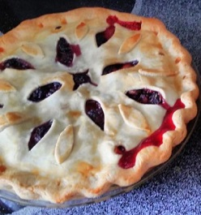

Carrera's Blackberry Peach Pie

One 9-inch pie
15 Min - Prep time
50 Min - Cook time
65 Min - Total
8 Servings
INGREDIENTS
- 3 cups fresh blackberries
- 3 fresh peaches - peeled, pitted, and sliced
- 3 tablespoons cornstarch
- 3/4 cup white sugar
- 1 double crust ready-to-use pie crust
- 2 tablespoons butter, melted
- 1 tablespoon ground cinnamon
- 1/2 teaspoon ground nutmeg
DIRECTIONS
- Preheat Oven: Preheat oven to 450 degrees F (230 degrees C).
- Mixing: Mix the blackberries, peaches, cornstarch, and sugar in a large bowl.
- Make Pie: In a 9-inch pie pan ...
- Press one of the pie crusts into the bottom of a 9-inch pie pan.
- Pour the blackberry mixture into the pie crust.
- Cover with the remaining pie crust.
- Crimp the edges of the two crusts together to seal.
- Cut slits in the top of the pie to vent.
- Brush the top with the melted butter.
- Sprinkle the cinnamon and nutmeg over the top.
- Bake: Bake in preheated oven for 15 minutes. Reduce the oven temperature to 350 degrees F (175 degrees C) and continue to cook until top crust is golden brown, 35 to 40 minutes.
USER COMMENTS
LINKS
Search for other blackberry peach pie recipes
Home